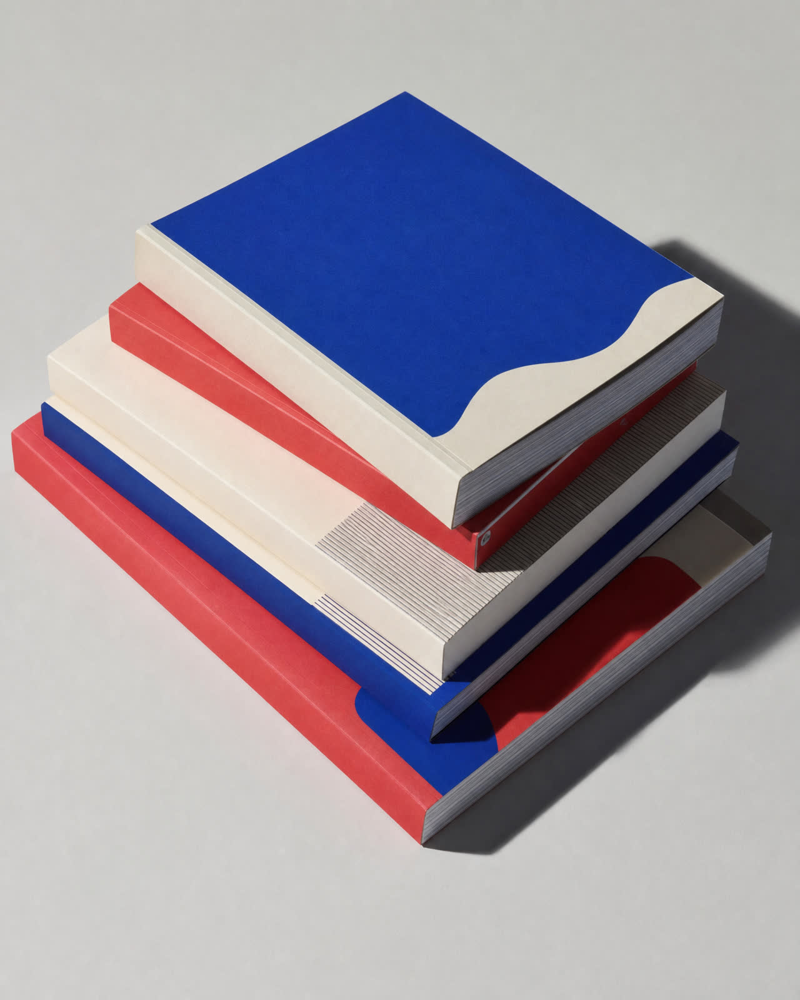
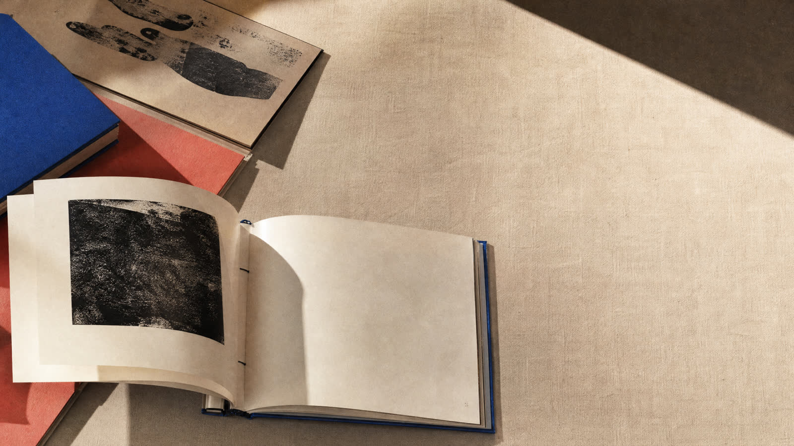
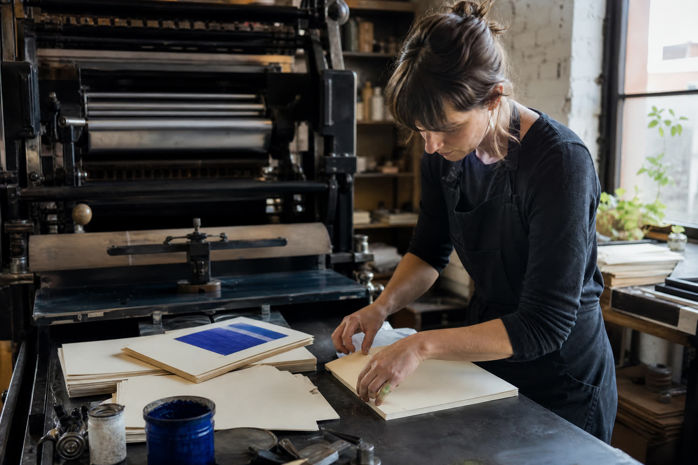
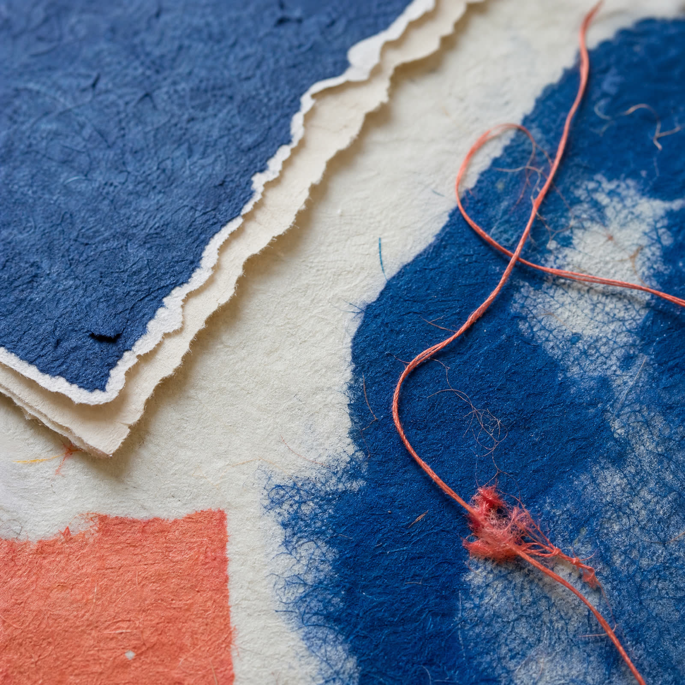
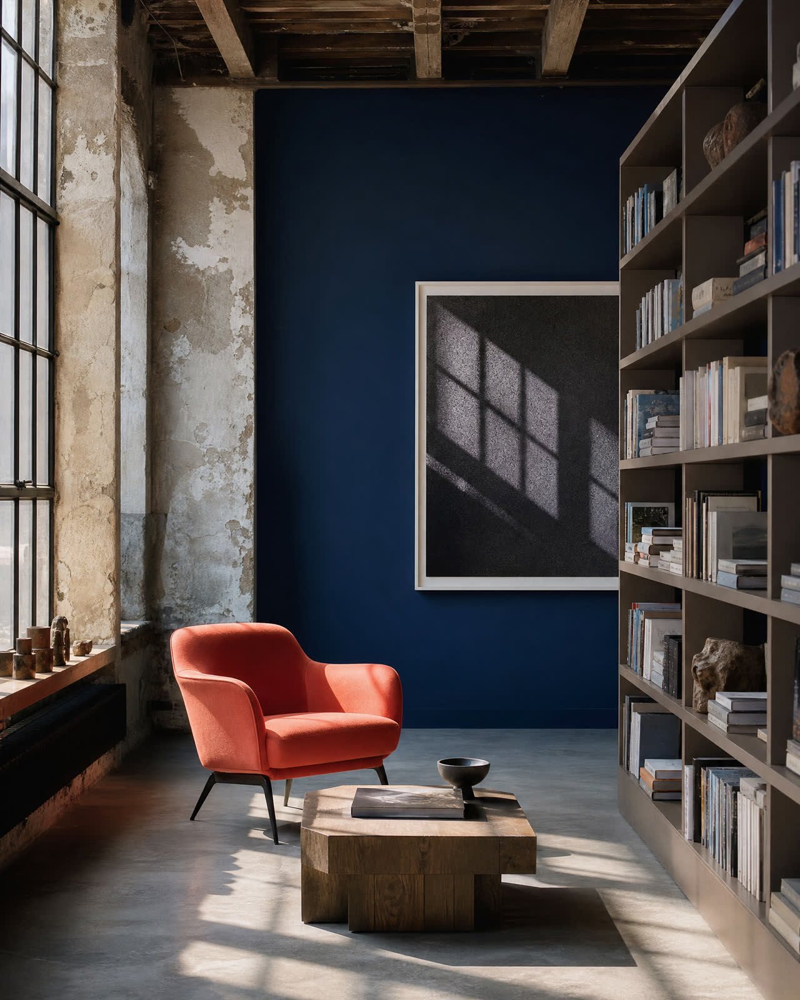

Salt / Field NotesFolio 019
Folio House publishes writing, images and ideas that refuse to stay in one category.

We believe a book can be a place you return to, not just a thing you finish.
Folio House is a small, independent publisher founded in 2018. We work with writers, artists and researchers on books that take their time becoming themselves.




Our studio is where manuscripts become objects. We edit, sequence, typeset, bind and argue over the weight of a page. Then we send the work out into the world.
We are currently reading proposals for books with a strong point of view, a physical ambition and no obvious shelf.
read@folio.house →